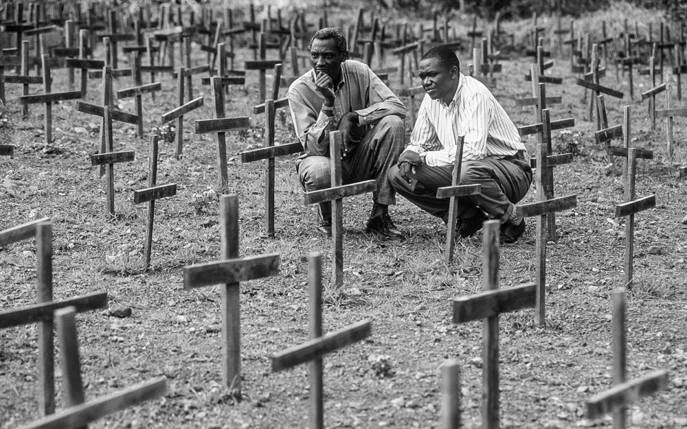

Aftermath Of Genocide
by Sebastian Le | Photo by John Warren Contemplating heritage, the impacts of hate, and the grave consequences of genocide, we find ourselves at a pivotal juncture. History usually highlights the severe ramifications of prejudice and within this reality lies the potential for meaningful transformation.
Heritage, far from a static notion, serves as a dynamic picture of interweaving and diverse narratives. Hate, as a learned and corrosive force, is not only an obstacle; it is a societal issue that can be fixed. Genocide, the ultimate manifestation of unchecked hatred, emphasizes the grave dangers associated with silence and indifference.
Affecting global change requires a collective commitment to personal transformation. Acknowledging the uncomfortable truths embedded in history, actively dismantling the foundations of hate, and fostering empathy through educational initiatives becomes imperative. Stepping aside from this contemplative space, a col duty emerges — to serve as stewards of a future where the lessons of the past resonate in our current, everyday choices.
In the face of hatred, a collective voice must echo as a call for justice, equity, and inclusion. The issues inherent in heritage, hate, and genocide continue in our modern reality. It is the shared responsibility of society, both individually and collectively, to fight these issues with empathy, tolerance, and education. Only through these concerted efforts can we aspire to transcend historical cycles and create a world characterized by harmony, dignity, and shared humanity.